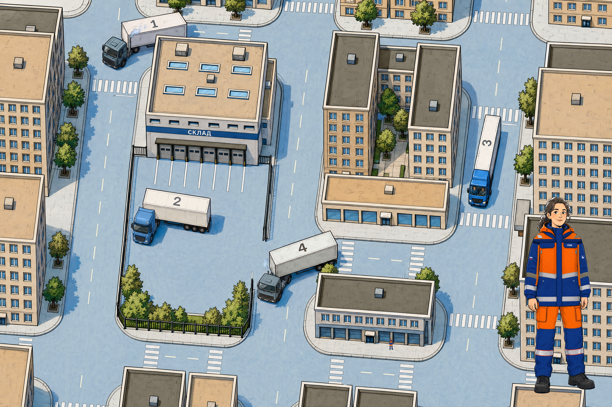
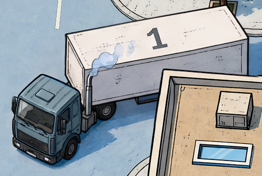
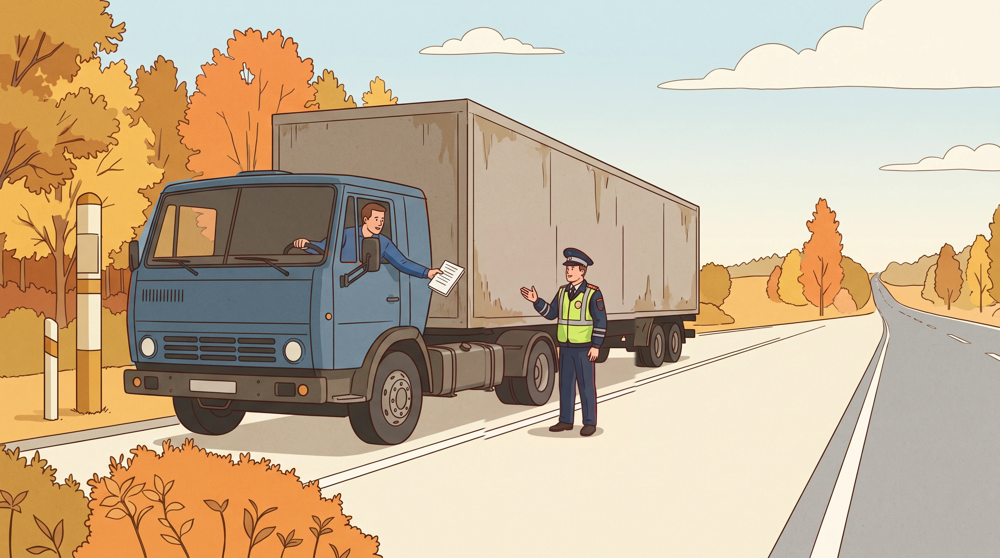

Четыре машины. Отдельный автоподбор.
Источники и паспорт машин№4 сохраняет нейтральную серо-синюю кабину утверждённой карты 17. Под неё перекрашен результат: обе старые машины теперь одной нейтральной семьи. Оранжевый в прежнем результате — история рисунка, не требование сценария и не повод выделять выбор.

{kind=link}
{kind=link}
№1 → old → результат
Проверка документов


{kind=link}
Паспорт непрерывности
| Выбор | Кабина | Модель / прицеп | После выбора |
|---|---|---|---|
| №1 | Серо-синяя | Старый низкий тягач / светлый | ДПС; общий сюжет с №4 |
| №2 | Синяя | Современный высокий / светлый | Водитель в кафе |
| №3 | Синяя | Современный высокий / светлый | Два водителя |
| №4 | Серо-синяя | Старый низкий тягач / светлый | ДПС; общая нейтральная семья с №1 |
| Автоподбор | Синяя | Новый перевозчик / Express | Шоссе, два водителя внутри; не пятая ручная машина |
Что доказано, а что нет
Карта и четыре ручных результата сохранены после нейтральной правки. Только Express получил новый рисунок на шоссе по референсу прежней синей фуры. Разметка, тёплые крыши, осенняя листва, номера, прицепы, экипаж №3 и исходная девушка не перерисованы. В игре по-прежнему используются прежние видео и иллюстрации.
Это статическая проверка узнаваемости, не скорости. В сценарии появление Express у дверей — реакция карты; шоссе указано для иллюстрации результата, а не отдельно названной кат-сцены. Теперь фура Express показана на шоссе, оба водителя сидят внутри. Это один статичный кадр, не анимация; надпись — кандидат, не утверждённый фирменный логотип. Результат №3 показывает остановку с двумя водителями, не колонну. Точная марка тягача не заявляется.
{kind=link}
{kind=link}